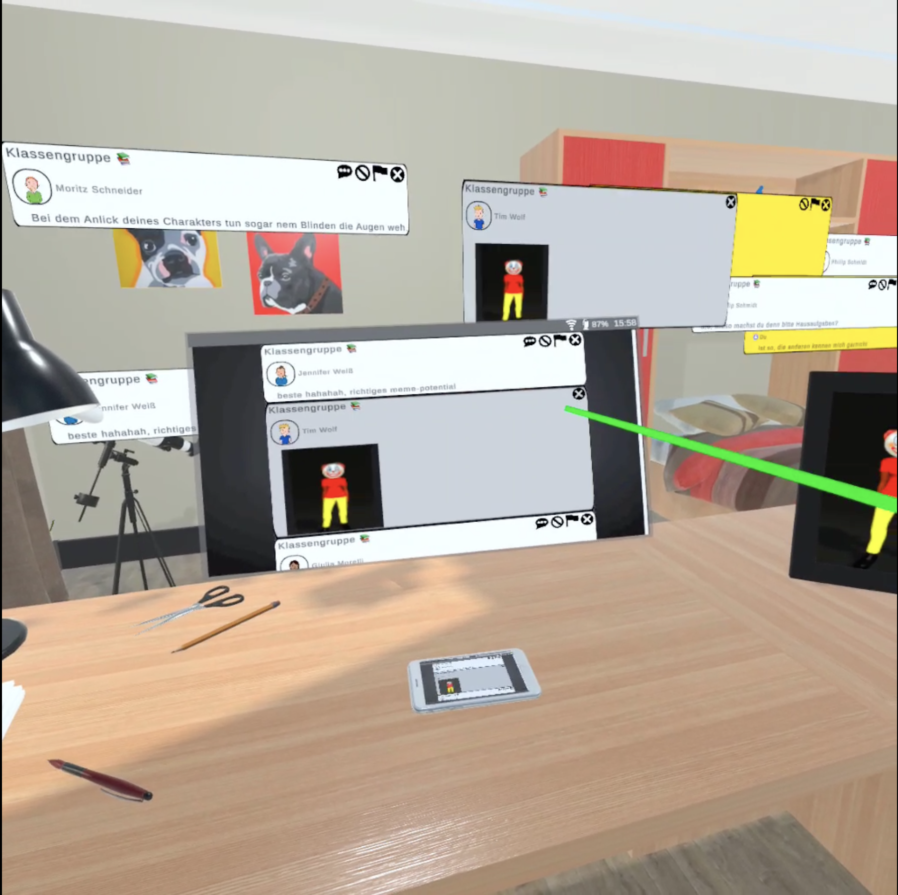
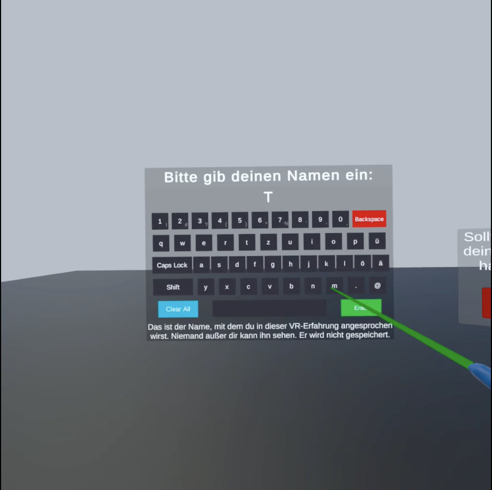
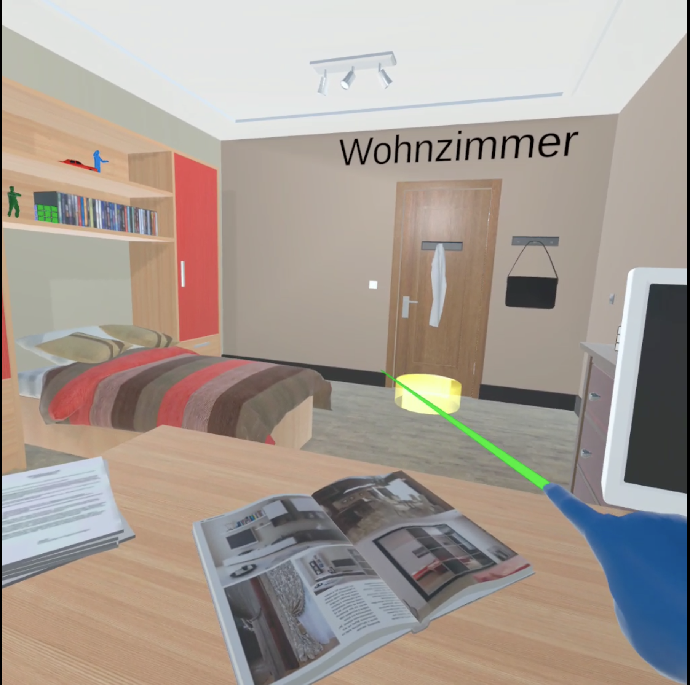
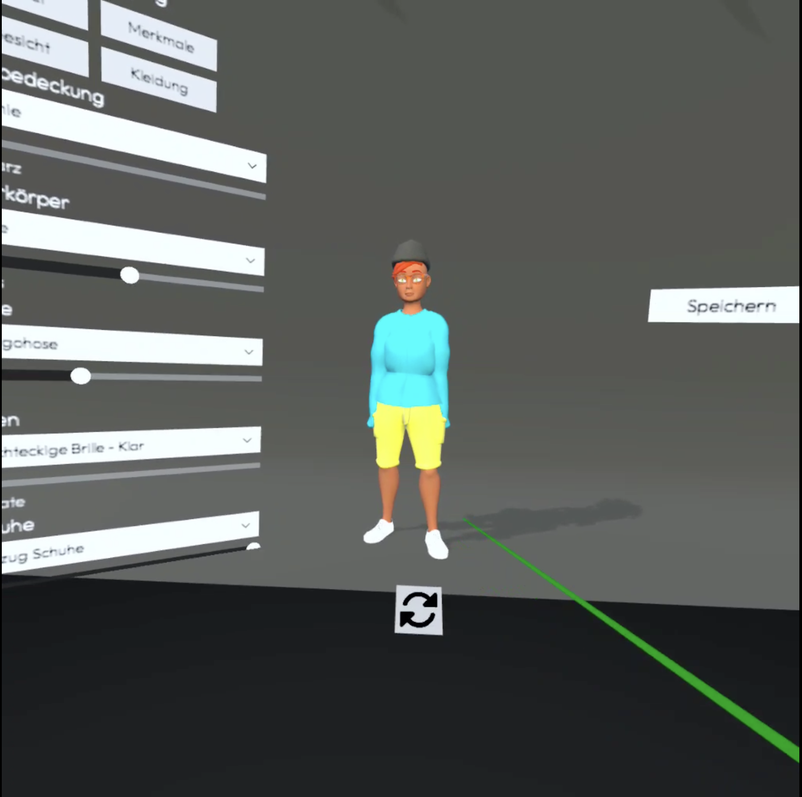

TooCloseVR: Using psychological ownership to foster empathy
TooCloseVR is a virtual reality application designed to combat cyberbullying by fostering empathy and emotional awareness. Through personalized avatars and immersive scenarios, the project explores how psychological ownership influences user perception, connection, and distress.
Summary
Responsibilities
- Concept development
- Prototype development (Unity)
- Workshop facilitation
- Data collection & analysis
- Results documentation
Development
The project expanded an existing VR application by introducing avatar personalization and psychological ownership. Using Unity, we created character customization features and improved interaction design to enhance immersion and emotional connection.


UX features


Workshop
A four-day workshop with 95 students (aged 12–14) evaluated the VR experience. Participants interacted with both personalized and non-personalized conditions.
- Moderation of VR sessions
- Pre- and post-surveys
- Behavioral observation
- Qualitative feedback collection